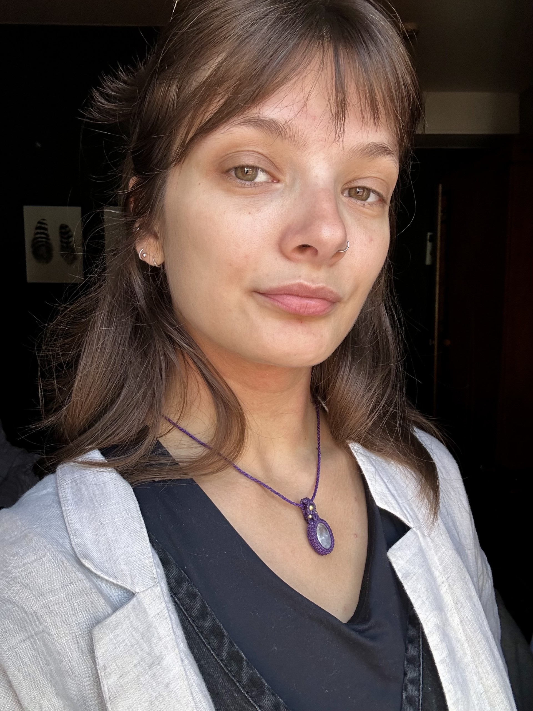

Ruth Neville
Research Fellow · The Bartlett Centre for Advanced Spatial Analysis (CASA)
University College London
About
I am a spatial data scientist and population geographer with research interests in migration, mobility and housing. My work combines spatial analysis, statistical modelling and computational methods to investigate patterns of population movement and change.
I am currently a Research Fellow at UCL, working on the No Space Like Home? project, which examines the geography of very small homes in England. I completed my PhD in Geographic Data Science at the University of Liverpool in 2025, focusing on international student mobility to the UK, including its drivers, responses to Brexit and COVID-19, and future trajectories.